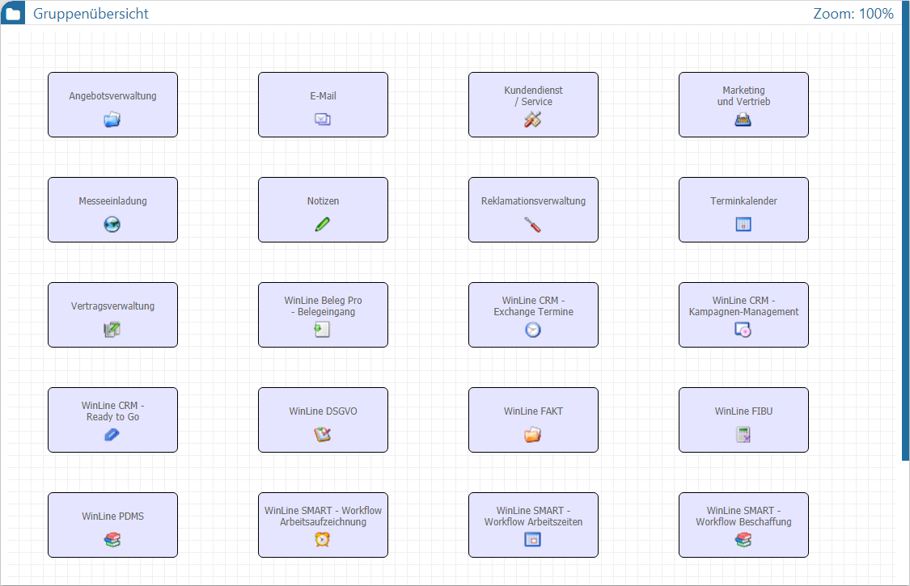
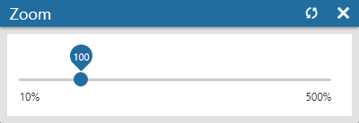

In dem sogenannten "Graphen", d.h. der grafischen Übersicht, werden die einzelnen Workflow-Gruppen, die CRM-Prozesse (d.h. die Workflows) und die CRM-Aktionen dargestellt.

Die dargestellten Objekte sind hierbei immer abhängig von der gewählten Ansichtsebene, wobei diese in den nachfolgenden Kapiteln detailliert beschrieben werden:
ü Gruppenübersicht
In der
Gruppenansicht werden die einzelnen Workflow-Gruppen angezeigt. Durch Anwahl
einer Gruppe kann in diese gewechselt werden. Mit Hilfe des Buttons "Übersicht"
kann jederzeit wieder in die Gruppenübersicht zurückgewechselt werden.
ü Startschritt- und
Aktionsübersicht
Wurde eine Gruppe ausgewählt, so werden die einzelnen
Startschritte (d.h. die Workflows bzw. CRM-Prozesse) und die CRM-Aktionen
angezeigt. Durch Anwahl eines Startschritts bzw. einer Aktion wird in die Workflowübersicht gewechselt. Befindet
man sich bereits in der Workflowübersicht, so kann mit Hilfe
des Buttons "Startschritte" in diese Übersicht zurückgewechselt werden.
ü Workflowübersicht
In der
Workflowübersicht wird der gesamte CRM-Prozess des ausgewählten Startschritts
angezeigt und kann überarbeitet werden.
Unabhängig von der gewählten Ansichtsebene stehen im Graphen immer folgende Funktionen zur Verfügung:
Ø Navigation in den Ansichtsebenen
Durch Anwahl von Objekten im Graphen kann immer in eine darunterliegende Ansichtsebene gewechselt werden. Mit Hilfe der Buttons "Übersicht" und "Startschritte" kann wiederum in eine darüber liegende Ansichtseben gewechselt werde.
Ø Scroll-Balken
Reicht der Anzeigebereich im Graphen nicht aus, so werden Scroll-Balken gebildet. Neben der üblichen Bedienung per Mausanwahl kann im Anzeigebereich auch per rechter Maustaste oder via Tastenkombinationen und Mausrad gescrollt werden.
ü gedrückte rechte Maustaste => es wird frei im Graphen gescrollt
ü ALT + Mausrad nach vorne => es wird nach oben gescrollt
ü ALT + Mausrad nach hinten => es wird nach unten gescrollt
ü SHIFT + Mausrad nach vorne => es wird nach links gescrollt
ü SHIFT + Mausrad nach hinten => es wird nach rechts gescrollt
Ø Zoom
Innerhalb des Graphen steht eine Zoom-Funktion zur Verfügung, mit deren Hilfe der Inhalt des Graphen verkleinert und vergrößert werden kann. Der aktuelle Faktor wird dabei ganz rechts in der Kopfleiste des Graphen dargestellt.
Durch Anwahl des Faktors öffnet sich das Fenster "Zoom", in welchem der Faktor anhand eines Schiebereglers definiert werden kann.

ü - Rücksetzen
Der Faktor wird auf 100%
zurückgesetzt.
ü - Schließen
Das Fenster "Zoom" wird
geschlossen.
Hinweis 1
Neben der Bedienung des Schiebereglers kann der Zoom-Faktor auch per Tastenkombinationen und Mausrad erfolgen.
ü STRG + "+"-Taste => vergrößern um 10%
ü STRG + "-"-Taste => verkleinern um 10%
ü STRG + "."-Taste => rücksetzen auf 100%
ü STRG + Mausrad nach vorne => vergrößern um 10%
ü STRG + Mausrad nach hinten => verkleinern um 10%
Hinweis 2
Der Workflow Editor wird immer mit dem Zoom-Faktor 100% gestartet. Dieses gilt auch das Aktivieren des Bearbeitungsmodus, d.h. der Faktor wird auf 100% zurückgesetzt.